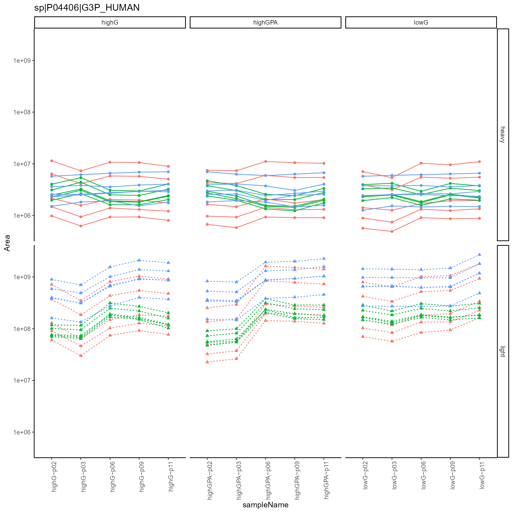
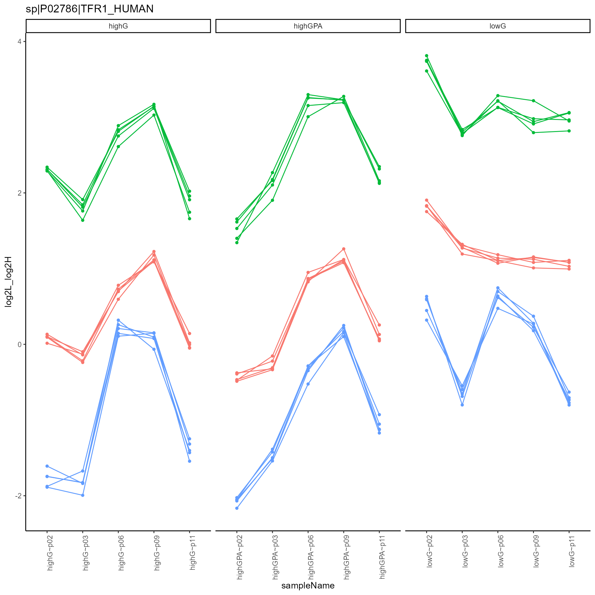
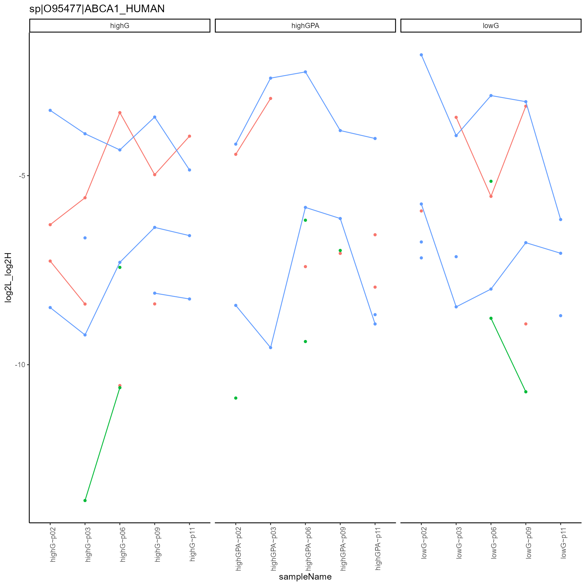
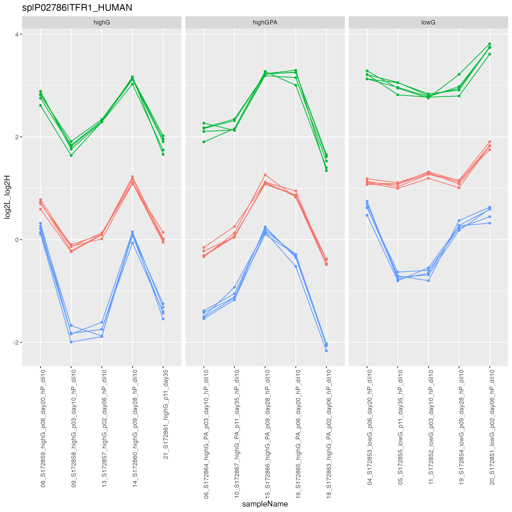
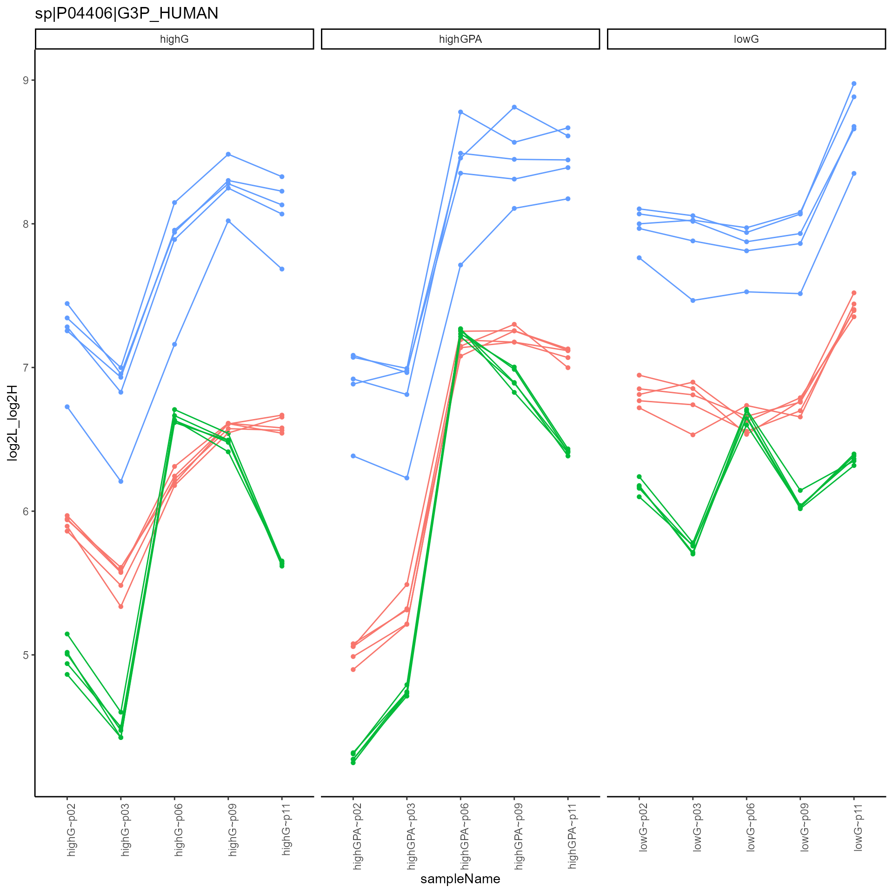
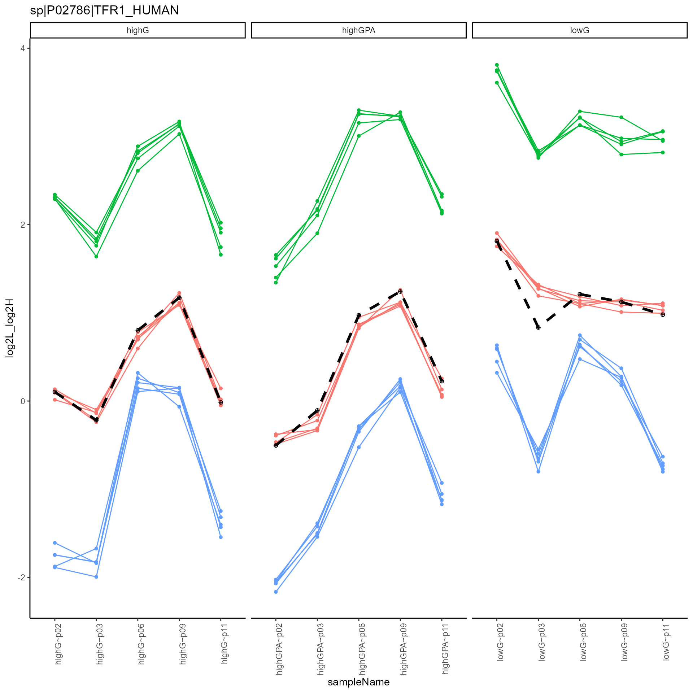
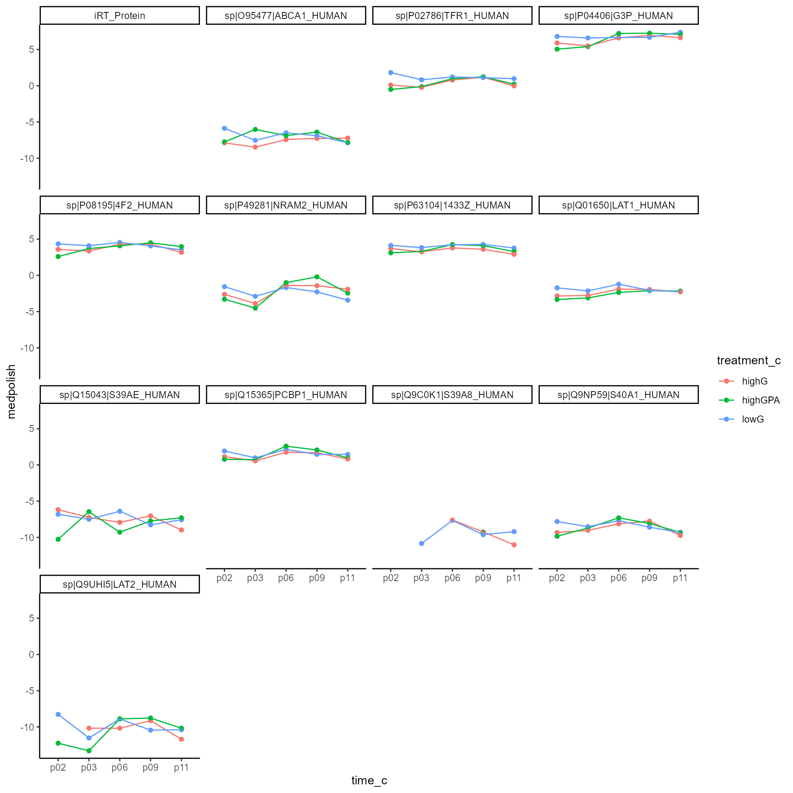
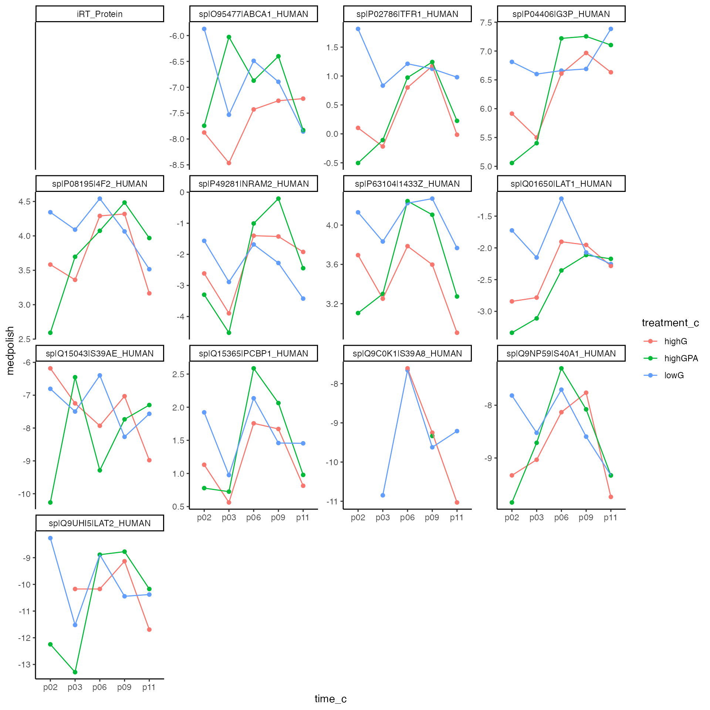

Supplement - Data preprocessing of SRM Heavy Light data
Functional Genomics Center Zurich
20 March, 2024
Source:vignettes/Supplement_TidyAnalysis_HL_Skyline.Rmd
Supplement_TidyAnalysis_HL_Skyline.Rmd
outdir <- tempdir()Setting up the configuration
data("data_skylineSRM_HL_A")
allDataM <- data_skylineSRM_HL_A$data
skylineconfig <- create_config_Skyline(isotopeLabel = "Isotope.Label",
ident_qValue = "annotation_QValue")
skylineconfig$table$factors[["treatment_c"]] <- "Condition2"
skylineconfig$table$factors[["time_c"]] <- "time"
skylineconfig$table$is_response_transformed = FALSE
resData <- setup_analysis(allDataM, skylineconfig)
resData$Area[resData$Area == 0] <- NA
tt <- R6_extract_values(skylineconfig)
yaml::write_yaml(tt, file=file.path(outdir,"testSkyline.yml"))
proteinIDsymbol <- rlang::sym(skylineconfig$table$hierarchy_keys()[1])
xnested <- resData |> dplyr::group_by(UQ(proteinIDsymbol)) |> tidyr::nest()
plot_hierarchies_line(xnested$data[[2]],
xnested$protein_Id[[2]],
skylineconfig)
transitions in one plot.
plot_hierarchies_line(xnested$data[[3]],
xnested$protein_Id[[3]],
skylineconfig,
separate = TRUE)

transitions in separate plot.
Computing L to Heavy fold changes
HLData <- spread_response_by_IsotopeLabel(resData, skylineconfig)
HLData <- HLData |> dplyr::mutate(log2L_log2H = log2(light_Area) - log2(heavy_Area))
HLData$Isotope.Label <- "L/H"
skylineconfigHL <- skylineconfig
skylineconfigHL$table$workIntensity = "log2L_log2H"
skylineconfigHL$table$is_response_transformed = TRUE
skylineconfigHL$table$isotopeLabel## [1] "Isotope.Label"
xnested <- HLData |> dplyr::group_by(UQ(proteinIDsymbol)) |> tidyr::nest()
skylineconfigHL$table$get_response()## [1] "log2L_log2H"Plot heavy to light ratio
plot_hierarchies_line(xnested$data[[2]], xnested$protein_Id[[2]], skylineconfigHL)
HLfigs <- xnested |> dplyr::mutate(plot = purrr::map2(data, UQ(proteinIDsymbol) , plot_hierarchies_line, skylineconfig))
#pdf(file.path(outdir,"allHLProteins.pdf"), width = 10, height = 10)
invisible(lapply(HLfigs$plot[1:3], print))
#dev.off()Compute a protein level summary
skylineconfigHL$table$hierarchy_keys_depth()## [1] "protein_Id"
HLfigs3 <- prolfqua::intensity_summary_by_hkeys(HLData, skylineconfigHL, medpolish_estimate)
HLfigs3 <- HLfigs3("nested")
HLfigs3 <- dplyr::inner_join(HLfigs3$xnested, HLfigs, by = skylineconfigHL$table$hierarchy_keys_depth())
p <- plot_hierarchies_line(xnested$data[[2]], xnested$protein_Id[[2]], skylineconfigHL) |>
plot_hierarchies_add_quantline(HLfigs3$medpolish_estimate[[2]],"medpolish", skylineconfigHL)
p
HLfigs3 <- HLfigs3 |>
dplyr::mutate(figsMed = purrr::map2(plot, medpolish_estimate, plot_hierarchies_add_quantline, "medpolish", skylineconfig))
#pdf(file.path(outdir,"allProteinsWithMed.pdf"), width = 10, height = 10)+
invisible(lapply(HLfigs3$figsMed[2:5], print))


#dev.off()Get Protein intensities
prots <- HLfigs3 |> dplyr::select(as.character(proteinIDsymbol), medpolish_estimate) |>
tidyr::unnest(cols = "medpolish_estimate")
ggplot2::ggplot(prots, ggplot2::aes(x = time_c, y = medpolish, group = treatment_c, color = treatment_c )) +
ggplot2::geom_point() +
ggplot2::geom_line() +
ggplot2::facet_wrap(~protein_Id) +
ggplot2::theme_classic()

Plot protein intensities
ggplot2::ggplot(prots, ggplot2::aes(x = time_c, y = medpolish, group = treatment_c, color = treatment_c )) +
ggplot2::geom_point() +
ggplot2::geom_line() +
ggplot2::facet_wrap(~protein_Id, scales = "free_y" ) +
ggplot2::theme_classic()

Plot protein intensities